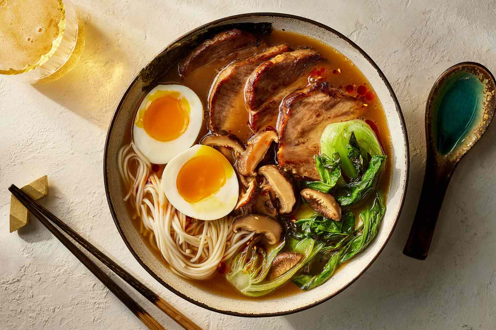
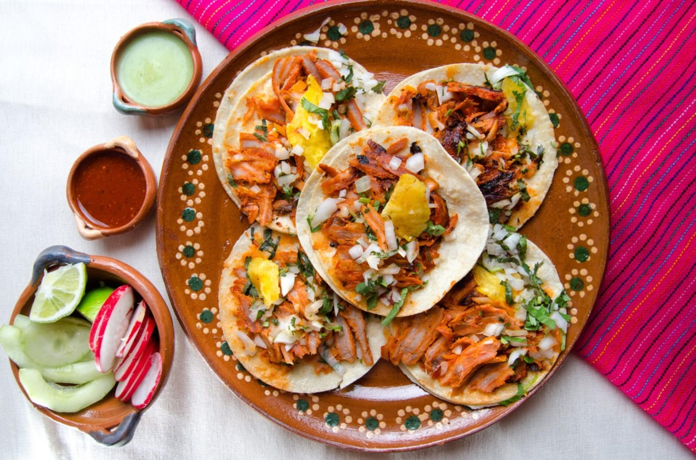
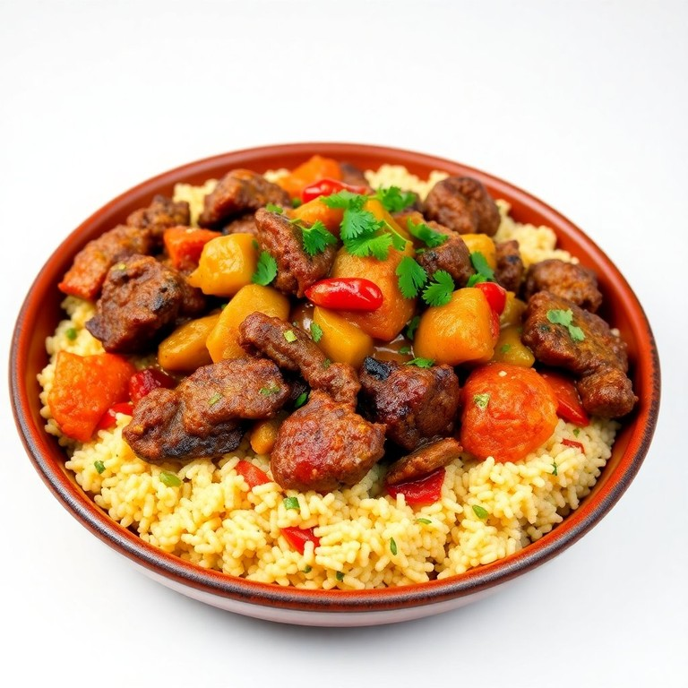
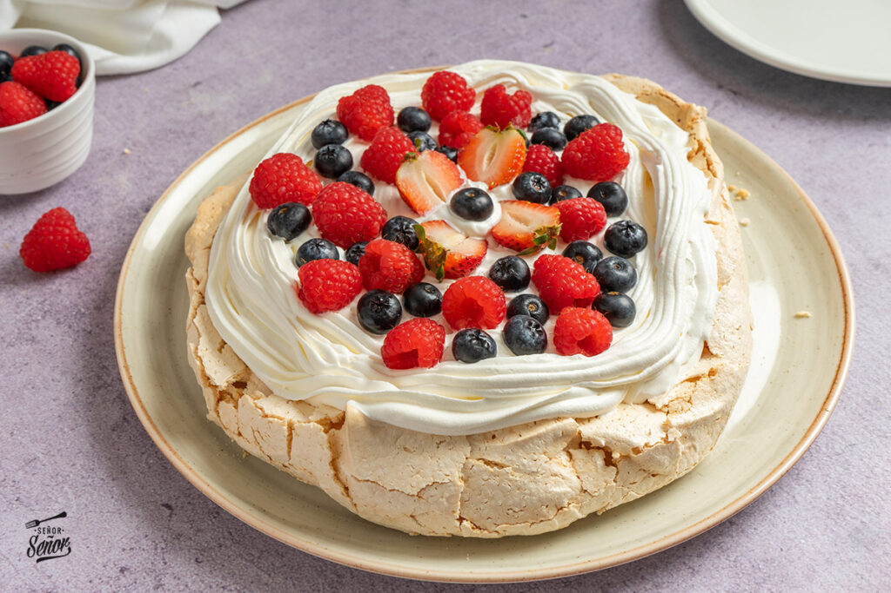

Pizza Napolitana
Europa (Italia)Masa fina, tomate San Marzano y mozzarella de búfala. La simplicidad hecha arte.
Bienvenido a tu guía definitiva para descubrir los lugares mas curiosos de cada continente
La mejor forma de conocer una cultura es a través de su cocina. Aquí tienes 5 paradas obligatorias que seguro encontrarás en cualquiera de los destinos a los que te dirijas.
Masa fina, tomate San Marzano y mozzarella de búfala. La simplicidad hecha arte.

Un caldo denso de cerdo cocinado durante horas con fideos frescos y huevo marinado.

Carne de cerdo adobada, piña, cebolla y cilantro sobre una tortilla de maíz recién hecha.

Sémola de trigo al vapor acompañada de verduras, legumbres y carnes tiernas especiadas.

Un postre de merengue crujiente por fuera y cremoso por dentro, cubierto de frutas frescas.
Delicadas galletas unidas por una generosa capa de dulce de leche y decoradas con coco rallado.